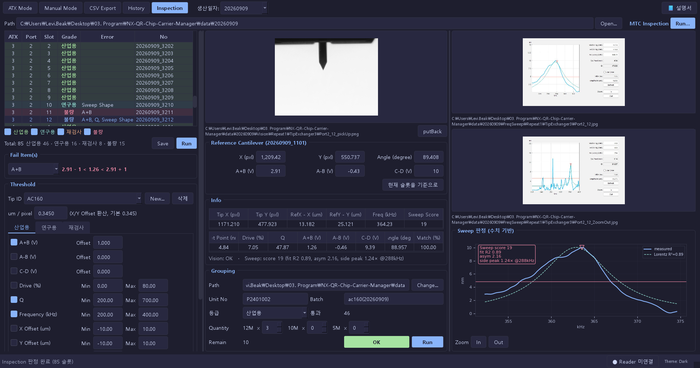

사용자 가이드
ATX 측정 결과, Manual 캡처·OCR, MTC Inspection, QR 태깅, 반출과 이력을 한 흐름으로 처리합니다.
1. 시작하기
프로그램을 실행하면 상단에 작업 모드와 생산일자가 표시됩니다. 현장 작업은 측정 데이터를 준비하고 QR을 매칭한 뒤, 필요하면 CSV 또는 서버로 반출하고 History에서 확인하는 순서로 진행합니다.
Browse하거나 Manual 탭에 이미지를 Capture/Load합니다.QR 입력 칸에 코드를 입력한 뒤 Enter를 누릅니다.CSV Export에서 CSV, 이미지 포함 파일, 서버 업로드를 실행합니다.History에서 검색·상세 확인·통계·백업을 수행합니다.상단의
📘 설명서 버튼을 누르면 이 문서가 앱 내부 창에서 열립니다. 창의 브라우저에서 열기로 외부 브라우저에서도 볼 수 있습니다.데이터 저장 위치
측정 이력과 앱 설정은 다음 SQLite 파일에 저장됩니다.
%LOCALAPPDATA%\MCQRCodeChipCarrier\chip_carrier.db
원본 ATX/MTC 폴더와 Manual 캡처 이미지는 별도 파일로 유지됩니다. 테스트나 복원 작업은 운영 DB와 원본 폴더의 복사본으로 진행하세요.
2. 공통 화면
| 화면 요소 | 사용 방법 |
|---|---|
ATX Mode | Summary.csv가 있는 ATX 결과 폴더를 열고 슬롯 카드에 QR을 매칭합니다. |
Manual Mode | 화면 캡처·이미지 불러오기·OCR·수기 Frequency/Q 입력을 처리합니다. |
CSV Export | 현재 ATX 또는 Manual 데이터를 CSV/이미지로 저장하고 서버에 업로드합니다. |
History | 저장된 Measurement Set을 검색·로드·삭제하고 통계와 백업을 관리합니다. |
Inspection | MTC 런 폴더의 슬롯 등급 판정과 12M/10M/5M 로트 생성을 수행합니다. |
생산일자 | 현재 작업의 날짜입니다. 표시 형식은 yyyyMMdd이며 저장·반출 데이터에 반영됩니다. |
🎯 Calibrate OCR | Manual 이미지의 Frequency/Q OCR 영역을 해상도별로 조정합니다. 저장된 프로파일은 다음 OCR부터 사용됩니다. |
| 하단 상태 바 | 왼쪽에 작업 로그가 표시되고, 오른쪽의 Reader 상태 칩은 QR 리더기 설정을 엽니다. Theme: Dark/Light는 재시작 후 적용됩니다. |
로그 읽기
ATX, Manual, Inspection 화면의 Log 영역에는 작업 결과가 순서대로 쌓입니다. Level 필터로 표시할 로그 수준을 좁힐 수 있습니다. 문제가 발생하면 로그의 파일 경로와 원인 문구를 함께 기록해 지원을 요청하세요.
3. ATX Mode
폴더 열기
ATX Mode를 선택하고Browse를 누릅니다.- ATX 결과 폴더를 선택합니다. 폴더에는 보통
Summary.csv와 FreqSweep 이미지가 있어야 합니다. - 왼쪽에
PO Number,Probe Type,Quantity가 표시되고 오른쪽에 폴더 탭과 슬롯 그리드가 나타납니다. - 폴더를 여러 개 열면 탭을 드래그해 순서를 바꿀 수 있습니다. 탭을 닫으면 해당 폴더의 화면 탭만 닫히며 원본 파일은 삭제되지 않습니다.
슬롯에 QR 매칭
- 그리드에서 대상 슬롯 카드를 클릭합니다.
- 하단의
QR입력 칸에 QR 코드를 스캔하거나 입력합니다. - Enter를 누르면 선택한 슬롯에 저장되고 다음 작업을 진행할 수 있습니다. 같은 QR이 다른 슬롯에 있으면 중복으로 거부됩니다.
- 잘못 입력한 코드는 카드의 컨텍스트 메뉴에서
Reset QR로 지운 뒤 다시 입력합니다.
Pass Pool과 Cassette CSV
여러 폴더에서 규격을 충족한 슬롯만 모으려면 상단의 🎯 Pass Pool N/M을 켭니다. Pass Pool은 폴더별 출처를 표시하면서 pass 슬롯을 하나의 목록으로 보여줍니다.
- Pass Pool 카드에서 포함할 슬롯을 선택하고 필요하면 QR을 매칭합니다.
- 최대 12개를 체크한 뒤
Cassette 확정 → CSV를 누릅니다. 12개 미만이면 부분 Cassette로 저장할지 확인합니다. - 미완성 슬롯을 포함할지 묻는 창에서 QR 있는 값만 반출 또는 전체 슬롯 반출을 선택합니다.
- 저장 위치를 지정하면
cassette_QR.csv가 생성됩니다.
다중 QR 리더기로 스캔할 때는 같은 ATX 번호의 대상 폴더만 열어야 합니다. 여러 ATX 번호가 섞여 있으면 앱이 어느 폴더에 매칭할지 결정할 수 없습니다.
4. Manual Mode와 OCR
탭 만들기
Manual Mode에서+ Add Tab을 누릅니다.시리얼 번호와Tip 이름을 입력하거나 카탈로그에서 선택합니다. 같은 Tip이라도 시리얼 번호가 다르면 별도 탭으로 만들 수 있습니다.- 일반 측정은
일반 (Test), QR만 기록하는 작업은컨택 (QR-only)를 선택합니다. - 첫 번째
Overview탭에는 전체 진행률이 표시되고, 각 시리얼 탭에는 카드가 들어갑니다.
이미지와 측정값 입력
| 기능 | 동작 |
|---|---|
📸 Capture | Zoom-In · Region Capture F6, Zoom-In · Window Capture F7로 새 카드를 만듭니다. |
| Zoom-Out 캡처 | 카드를 먼저 선택한 뒤 Zoom-Out · Region Capture F8 또는 Zoom-Out · Window Capture F9를 사용합니다. |
Load | 이미지 파일 여러 개 또는 이미지 폴더를 불러옵니다. Zoom-Out 파일은 기존 카드에 붙습니다. |
| 이미지 뷰어 클릭 | 클립보드에 이미지가 있으면 붙여넣고, 없으면 이미지 불러오기 선택 창을 엽니다. |
Refresh OCR | 저장된 ROI 프로파일로 현재 카드의 OCR을 다시 실행합니다. 수기로 입력했던 Frequency/Q가 OCR 결과로 바뀔 수 있습니다. |
Reset | 확인 후 모든 Manual 탭과 카드를 초기화합니다. |
이미지가 추가되면 OCR은 백그라운드에서 실행됩니다. OCR이 끝난 뒤에도 값이 비어 있으면 카드를 선택해 Frequency (kHz)와 Q를 입력하고 Apply를 누릅니다. QR은 하단 입력 칸에서 별도로 매칭합니다.
상단의
🎯 Calibrate OCR를 열고 참조 이미지를 불러온 뒤 Frequency와 Q 영역을 조정해 저장하세요. 해상도가 다른 이미지에는 해당 해상도의 ROI 프로파일이 필요합니다. 그래도 읽히지 않으면 Frequency/Q를 수기로 입력할 수 있습니다.5. CSV Export와 업로드
CSV 저장
CSV Export를 선택합니다. 상단에 현재 모드의Complete/Total진행률이 표시됩니다.- ATX는
전체(합본)또는 개별 폴더를 범위로 선택할 수 있고, 화면의 ATX/Manual 탭으로 대상 데이터를 바꿉니다. Save CSV의 메뉴에서 하나를 고릅니다.
| 메뉴 | 생성 결과 |
|---|---|
CSV Only | 선택한 데이터의 CSV만 저장합니다. |
CSV + Images | CSV와 QR ID 기준으로 이름을 정리한 ZOOMIN/ZOOMOUT 이미지를 한 폴더에 저장합니다. |
머지 후 저장 (CSV+이미지)… | Manual의 여러 시리얼 파트를 선택해 하나의 박스 이름으로 합친 뒤 CSV와 이미지를 저장합니다. |
QR이 없는 슬롯이 있으면 저장 전에 QR 있는 값만 반출 또는 전체 슬롯 반출을 선택합니다. 이미지 포함 반출은 QR ID를 파일명으로 사용하므로, 먼저 QR 매칭 상태를 확인하세요.
서버 업로드
- CSV Export 화면의
Login으로 서버 계정에 로그인합니다. 성공하면 서버 상태가Connected로 바뀝니다. Upload메뉴에서Upload CSV,Upload CSV + Images, 또는 머지 업로드를 선택합니다.- 기존 서버 데이터를 고치는 작업은
Update CSV (서버 수정)또는Update CSV + Images (서버 수정)를 사용합니다. 실행 전에 덮어쓰기 확인을 읽고 진행하세요. - 세션이 만료되면 앱이 업로드를 중단하고 다시 로그인하도록 안내합니다. 업로드 결과는 이력의 Upload 상태에도 반영됩니다.
Update는 서버에 이미 등록된 데이터를 현재 값으로 덮어쓰는 작업입니다. 대상 QR과 CSV를 확인한 뒤 실행하세요.6. History와 백업
이력 조회·재사용
History 화면의 필터는 Week, Probe, Upload, Search입니다. 검색어에는 PO, Probe, QR ID를 사용할 수 있습니다. Refresh로 목록을 다시 읽습니다.
- 목록에서 행을 클릭하면 하단에 PO, Probe Type, 작업 모드, 완료 슬롯 수와 슬롯 상세가 표시됩니다.
Open Folder로 원본 폴더 또는 이미지 폴더를 열 수 있습니다.Load Record를 누르면 저장된 ATX 데이터는 ATX 탭으로, Manual 데이터는 Manual 탭으로 다시 엽니다.- 삭제할 항목을 체크하고
Delete를 누릅니다. 삭제는 되돌릴 수 없으므로 확인 창에서 대상 수를 확인하세요.
통계와 품질 규격
대시보드에서 Period와 Probe Type을 선택하면 생산량, 완료율, In-Spec Yield %, Out-of-Spec, 기간 요약과 Frequency/Q 차트를 갱신합니다. ⚙ Spec Limits에서 Probe Type별 규격을 편집할 수 있으며, 단일 Probe Type을 고르면 차트에 규격선이 표시됩니다. 📄 Export Report로 현재 통계를 PDF로 저장합니다.
백업과 PC 이전
| 기능 | 용도 | 복원 방식 |
|---|---|---|
Quick Backup | 현재 SQLite DB를 .db 파일로 복사합니다. | Quick Restore에서 DB 전체를 교체합니다. |
Export Bundle | 기간과 이미지 포함 여부를 선택해 이식용 ZIP을 만듭니다. | Import Bundle에서 중복 정책을 선택해 현재 DB에 합칩니다. |
Bundle ZIP에는 manifest.json, data.jsonl, 선택한 경우 images/가 들어갑니다. Import 중복 정책은 skip, overwrite, merge 중에서 선택합니다.
현재 DB가 백업 파일로 덮어써집니다. 복원 전에 최신 DB를 별도 위치에 다시 백업하고, 실행 중인 OCR 작업이 없는지 확인하세요.
7. 다중 QR 리더기
하단 상태 바의 ● Reader 호스트 상태 칩을 누르면 리더기 설정이 열립니다. SR-X300W를 LAN/TCP로 연결하면 한 번의 트리거로 최대 72개 셀을 판독할 수 있습니다.
처음 설정하기
| 설정 화면 | 확인할 값 |
|---|---|
| 연결 | 전송 방식 LAN, 리더기 IP, 포트, 자동 접속을 확인합니다. 기본 LAN 포트는 9004입니다. |
| 판독 | LON/LOFF, 판독 시간, 결과 대기 시간, 기대 코드 수, NG 문자열을 확인합니다. |
| 셀 → Port/Slot | 기본 셀 번호는 cell = (Port - 1) × 12 + Slot입니다. 현장 지그가 다르면 셀별 대응을 재정의합니다. |
| 리더기 현재 값 | 리더기 값 읽기로 뱅크 1 값을 확인하고, 노출·게인·조명·콘트라스트를 바꾼 뒤 리더기에 쓰기 + 저장으로 저장합니다. |
다중 QR 스캔
- 먼저 대상 ATX 폴더를 열고 리더기 상태 칩이
연결됨인지 확인합니다. 다중 QR 스캔 F10을 누르거나 F10을 입력합니다. 앱이LON→ 판독 대기 →LOFF순서로 트리거합니다.- 판독 결과 중 현재 ATX 폴더에 대응되는 레코드는 즉시 QR에 적용됩니다. NG, 빈 레코드, 중복, 충돌, 제외 칸은 로그에 요약됩니다.
- 마지막 결과를 자세히 확인하려면
판독 검토를 누릅니다. 실물 보트·카세트 배치로 칸별 상태를 확인하고, 충돌 칸은 우클릭으로 덮어쓴 뒤적용합니다.
미리보기와 튜닝
판독 미리보기는 리더기의 검색 영역, 셀 번호, Port/Slot, 판독 코드와 NG 상태를 실물 배치로 보여줍니다.- 리더기 화상 방향이 실물과 다르면 창의
회전에서 0/90/180/270°를 선택하고적용합니다. 기본값은 270°입니다. 이 값은판독 검토에도 같이 사용됩니다. 오토 포커스 실행후에는테스트 판독으로 코드 수와 NG 칸을 확인합니다. 동작 파라미터는 앱에서 읽기 전용이며 변경은 리더기 설정 도구에서 합니다.
AutoID Network Navigator가 리더기에 연결되어 있으면 앱 명령이 거부될 수 있습니다. Navigator 연결을 해제한 뒤 앱의
연결 테스트와 테스트 판독을 다시 실행하세요.8. Inspection
Inspection은 MTC가 만든 하나의 런 폴더를 읽어 슬롯별 등급을 판정하고, 통과 슬롯을 기존 ATX 형식의 로트 폴더로 내보내는 화면입니다. 실제 앱에서 확인한 화면은 왼쪽 결과표, 가운데 이미지·Reference Cantilever·Info·Grouping, 오른쪽 이미지·Sweep 판정 차트의 3열 구조입니다.

런 폴더 열기와 자동 판정
Path옆Open...을 누르고 MTC 런 폴더(예:20260909)를 선택합니다.- 다음 입력 파일 중 하나 이상이 있어야 런 폴더로 인식됩니다:
PSPD.txt,FreqSweep.txt,Vision.txt. - 앱이 슬롯 데이터를 읽고 기준 캔틸레버를 자동 선택한 뒤 백그라운드에서 판정을 실행합니다. 상단 또는 결과표의
Run으로 다시 판정할 수 있습니다. - 결과표에서
산업용,연구용,재검사,불량필터를 켜고 총계와 등급별 수를 확인합니다.
선택 슬롯 확인
결과표 행을 클릭하면 가운데와 오른쪽 패널이 바뀝니다.
- Vision 영역에서 pickUp/putBack 이미지, FreqSweep와 ZoomOut 이미지를 확인합니다. 이미지 더블클릭은 원본 크기 확대 창을 엽니다.
Reference Cantilever에는 기준 슬롯의 X/Y, Angle, A+B/A-B/C-D가 표시됩니다. 기준을 바꾸려면 슬롯을 선택하고현재 슬롯을 기준으로를 누릅니다. sweep과 Vision 값이 모두 있는 슬롯만 기준으로 지정할 수 있습니다.Fail Item(s)에서 산업용 기준의 실패 항목을 고르면 아래에 실제 값과 판정식이 표시됩니다.- Sweep 판정 차트를 더블클릭하면
Sweep Explorer가 열립니다. 휠 확대, 드래그 이동, 크로스헤어, 피크 표와 Lorentzian 근거를 확인할 수 있습니다.
Threshold 템플릿
Tip ID별로 판정 템플릿을 저장합니다. New...는 기존 템플릿을 복사해 새 Tip을 만들고, 삭제와 Save로 관리합니다. um / pixel은 X/Y Offset 계산에 사용합니다. 산업용 Frequency/Q 값은 History의 Spec Limits에도 동기화됩니다.
| 등급 | 기본 판정 예시(AC160) |
|---|---|
| 산업용 | A+B ±1.0 · Q 200–700 · Frequency 200–400 kHz · Angle ±3° · Sweep Shape ≥70 · Vision Match ≥95 |
| 연구용 | A+B ±1.5 · Q 100–800 · Frequency 150–450 kHz · Angle ±5° · Sweep Shape ≥50 · Vision Match ≥90 |
| 재검사 | A+B ±2.0 · Q 50–1000 · Frequency 100–500 kHz · Angle ±8° · Sweep Shape ≥30 · Vision Match ≥80 |
| 불량 | 앞의 등급을 모두 통과하지 못하거나 Vision 파손으로 판정된 슬롯 |
위 값은 AC160 기본 템플릿의 예시입니다. 실제 판정은 현재 선택한 Tip 템플릿과 활성화된 항목을 사용합니다. A-B/C-D, Drive, X/Y Offset은 기본 템플릿에서 비활성입니다.
수동 변경과 리포트
결과표에서 슬롯을 우클릭하면 등급 수동 변경, 파손 표시, 기준 캔틸레버로 지정, 폴더 열기를 사용할 수 있습니다. 자동 판정으로 되돌리기로 수동 변경을 제거할 수 있습니다. 결과표 옆 Save는 Inspection_런ID.csv 형식의 판정 리포트를 저장합니다.
Grouping으로 로트 만들기
Path에서 로트 출력 위치를 고르고,Unit No와Batch를 입력합니다. Batch는 다음 작업을 위해 마지막 입력값이 기억됩니다.등급에서 로트로 묶을 등급을 선택하고12M,10M,5M수량을 입력합니다.Remain이 음수가 되면INVALID, 조건을 충족하면OK입니다.- 체크시트를 만들려면 Threshold의
정식 모델명과체크시트 템플릿(xlsx)을 지정합니다. 템플릿이 없으면 체크시트는 생성되지 않습니다. Run확인 후 로트가 생성됩니다. 각 로트에는 ATX 호환Summary.csv와 필요한 FreqSweep/Vision 파일이 복사되고, 지정한 경우 체크시트 xlsx도 생성됩니다.- 생성된 로트는 자동으로
ATX Mode탭에 열립니다. 표에는 해당 슬롯이→ Unit No로 표시되고, 이어서 ATX 또는 다중 QR 방식으로 QR을 매칭할 수 있습니다.
입력 파일 계약
| 파일/경로 | 읽는 값 |
|---|---|
PSPD.txt | A+B, A-B, C-D |
FreqSweep.txt, FreqSweep_ZoomOut.txt | Frequency, Set Point, Amplitude, Drive, Q와 sweep 점 |
Vision.txt | Tip Focus, Tip X/Y, Match Score |
Angle.txt, Exchange.txt | Angle, Delta Z 보조 데이터 |
Vision/Repeat1/TipExchanger*/ | pickUp/putBack 이미지 |
FreqSweep/Repeat1/TipExchanger*/ | 줌인/ZoomOut 이미지와 원본 sweep 텍스트 |
9. 문제 해결과 작업 종료
| 상황 | 확인할 내용 |
|---|---|
| ATX 폴더가 열리지 않음 | Summary.csv가 있는 결과 폴더인지, 다른 프로그램이 파일을 잠그고 있지 않은지 확인합니다. |
| Manual OCR 값이 비어 있음 | 카드 선택 → ROI 캘리브레이션 → Refresh OCR 순서로 다시 실행하고, 필요하면 Frequency/Q를 수기로 입력합니다. |
| QR 중복 경고 | 기존 카드에서 해당 QR을 찾아 Reset QR하거나, 실제 QR과 대상 슬롯을 다시 확인합니다. |
| Reader 미연결 | IP/포트, LAN 연결, 자동 접속 설정을 확인합니다. 상태 칩에서 설정을 열고 연결 테스트를 실행합니다. |
| 다중 QR 스캔이 적용되지 않음 | ATX 폴더를 먼저 열었는지, 같은 ATX 번호만 남겼는지, Reader가 연결됨인지 확인합니다. 상세 결과는 판독 검토에서 확인합니다. |
| Inspection 런 폴더가 인식되지 않음 | PSPD.txt, FreqSweep.txt, Vision.txt 중 하나가 폴더 바로 아래에 있는지 확인합니다. |
| 서버 업로드 실패 | Connected 상태와 세션 만료 여부를 확인하고 다시 로그인합니다. Update는 대상 CSV와 QR을 확인한 뒤 재시도합니다. |
일일 작업 종료 체크리스트
- 현재 작업의 QR 매칭 수와 Complete 수를 확인합니다.
- 필요한 CSV/이미지 반출 또는 서버 업로드 결과를 로그에서 확인합니다.
- 중요한 날에는
Quick Backup또는Export Bundle을 별도 저장장치에 보관합니다. - Inspection을 사용했다면 판정 리포트와 생성된 로트 폴더, 체크시트를 함께 확인합니다.
- 다음 작업의
생산일자가 올바른지 확인한 뒤 프로그램을 종료합니다.
프로그램 버전(현재 2.4.0), 작업 모드, 생산일자, 로그의 오류 문구, 문제가 난 원본 폴더의 파일 목록을 함께 전달하면 확인이 빠릅니다.